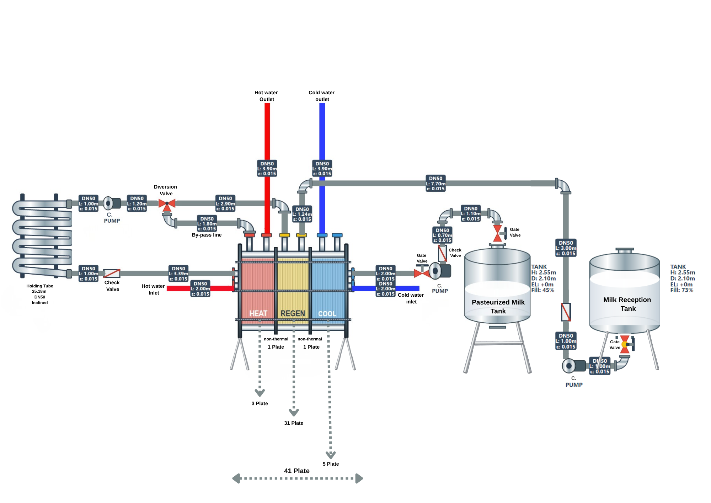

Sigma Design Engineers Team
Process design projects from the Department of Food Engineering, Ankara University — turning thermodynamics, mass balances, and hydraulics into industrial systems.
Process design projects from the Department of Food Engineering, Ankara University — turning thermodynamics, mass balances, and hydraulics into industrial systems.
We are Group 9, a team of students from the Department of Food Engineering and Computer Engineering at the Faculty of Engineering, Ankara University, brought together for the FDE450 Process Design course.
Under the academic guidance of our esteemed supervisors, we develop end-to-end process design projects — from thermodynamic feasibility studies and equipment sizing through to economic evaluation and final engineering documentation.
Our work covers separation processes, thermal processing, and fluid transport systems, with a particular focus on food and bioprocess engineering applications.
Three independent process design projects covering separation, thermal processing, and fluid transport.

A 100,000 L/day fractional distillation column designed to concentrate fermented ethanol to its 95.6% azeotropic purity.
View project
A multi-section gasketed plate heat exchanger with regeneration, heating, and cooling zones for HTST milk pasteurization.
View project
A 25 m³/h sanitary pipeline transferring pasteurized milk to a spray dryer feed tank, designed with the mechanical energy balance.
View project